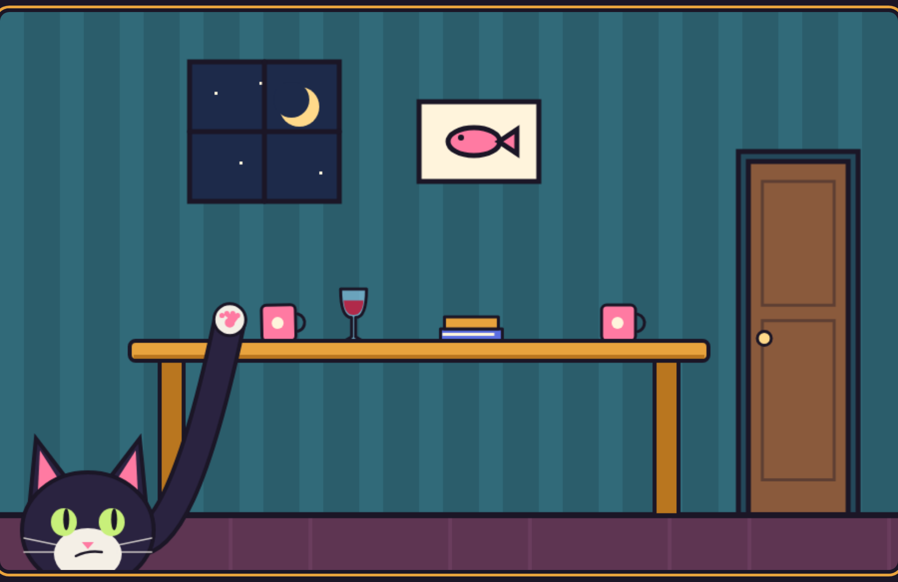
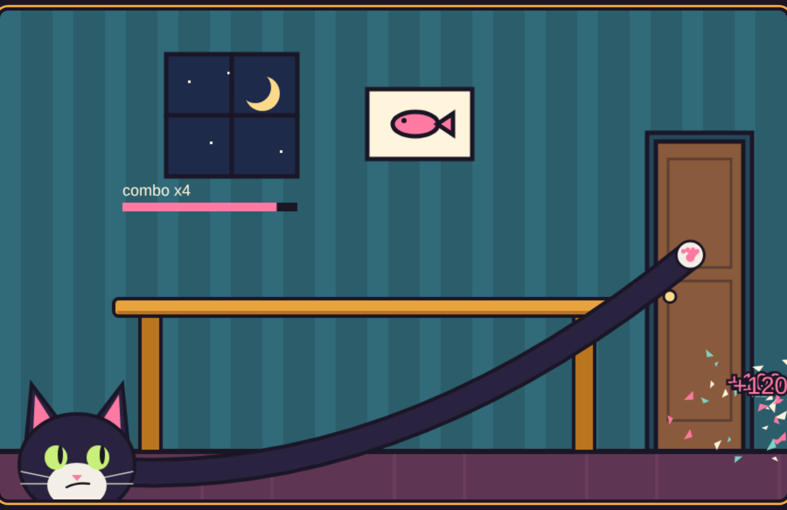
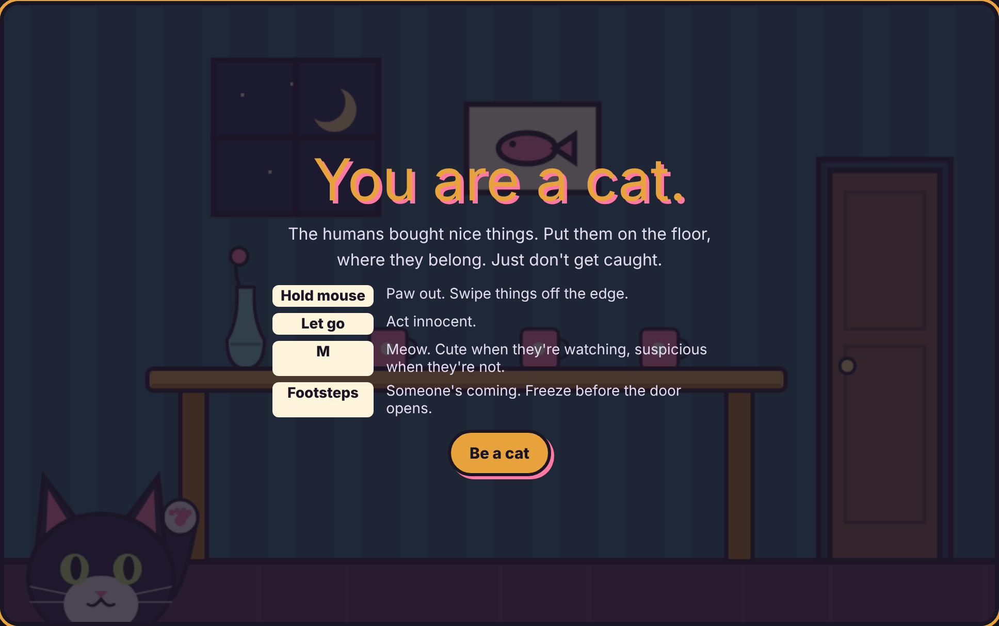
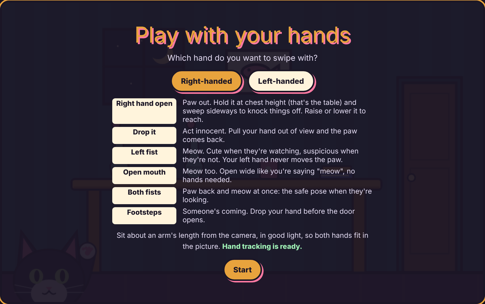

MODALITY: ARMS & HANDS
You are a cat. Knock the humans' nice things off the table with your hand, and don't get caught.

THE MODALITY
Your hand becomes the cat's paw. Webcam hand tracking reads your hands, and the camera image is never shown. Right- or left-handed, you choose.
Hold it at chest height (the table) to put the paw out.
The paw follows your hand and swipes things off.
Hand out of view: act innocent. Nothing to see here.
Meow with your other fist, or open wide. Cute if they're watching.
WHY ARMS
Reach out, swipe, pull back. Players don't need to learn a control, they just do what a cat does.
Freezing when the door opens is funnier when your whole arm has to drop and go still.
Hand tracking works sitting at a laptop. Your arm does the sweep, your hand tells the game what you mean.
USER INTERFACE

The paw stretches from the cat to your hand, mirrored, so you see your arm in the cat.
Thick outlines, big objects, few colors.
Your eyes are on the paw, so footsteps warn you before the door opens.
No camera feed on screen. One card explains every gesture first.
PROCESS
1
[Add your sketches: the cat, the room, the arm poses.]
2
Hold = paw out, let go = innocent. Footsteps, door, combos.
3
Pose tracking needed elbows in view. Hand tracking works sitting close.
4
The paw stayed out after letting go. Now it drops instantly.
5
A relay so it works on any network. Lift your finger to freeze.
6
Rules first, left or right hand, fist or open mouth to meow.
DESIGNS

Onboarding. Four rules, one button. The tone is set in the first line.
Play. Chain crashes fast for combo points, before the door opens.
ITERATION

Every gesture is on one screen before the camera game starts.
Pick which hand swipes. The other hand only meows.
Raise your other fist, or open your mouth wide.
No more paw popping out while you act innocent, or flicker.
WITH MORE TIME
A quick "show me your reach" step so tall, short, sitting and standing players all reach the whole table.
Filter the jitter so a shaky but frozen arm doesn't read as moving.
A two-handed push, a slow nudge to the edge, a tail flick, each its own arm gesture.
Watch more people play to tune difficulty and how long a round should last.
OPEN QUESTIONS
01 Is the arm actually more fun than the mouse, or just more tiring?
02 Without the camera feed, do players understand why tracking lost them?
03 Fist or open mouth to meow: which one do people actually use?
04 How long can someone play before their arm gives up?